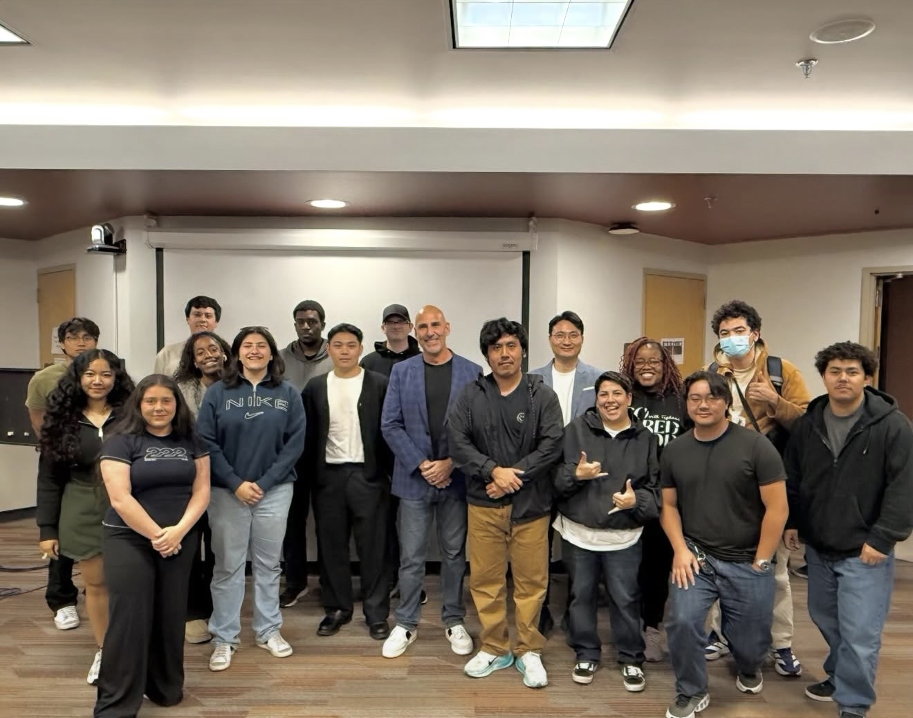
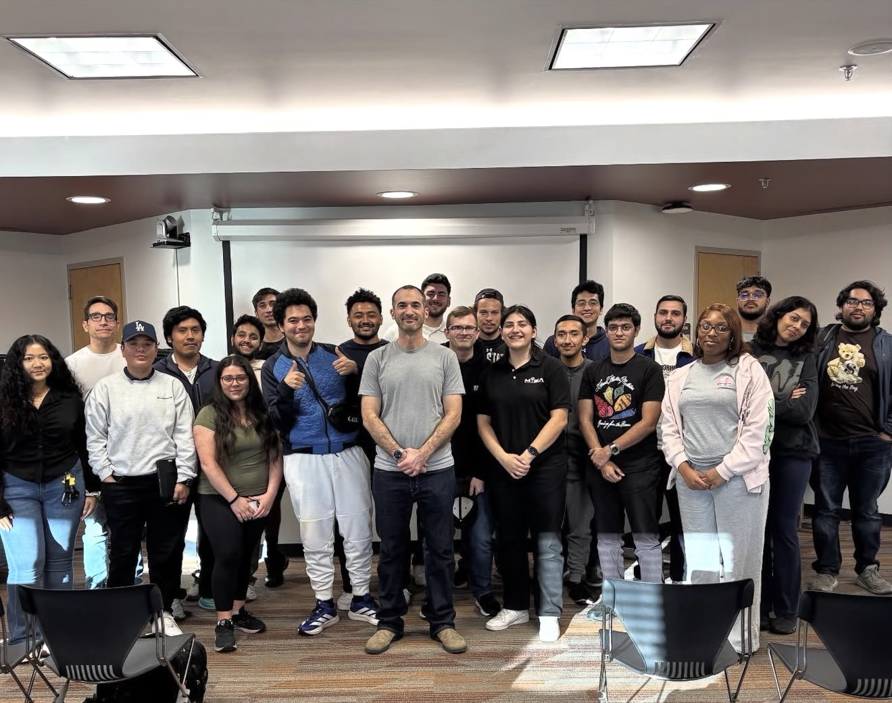
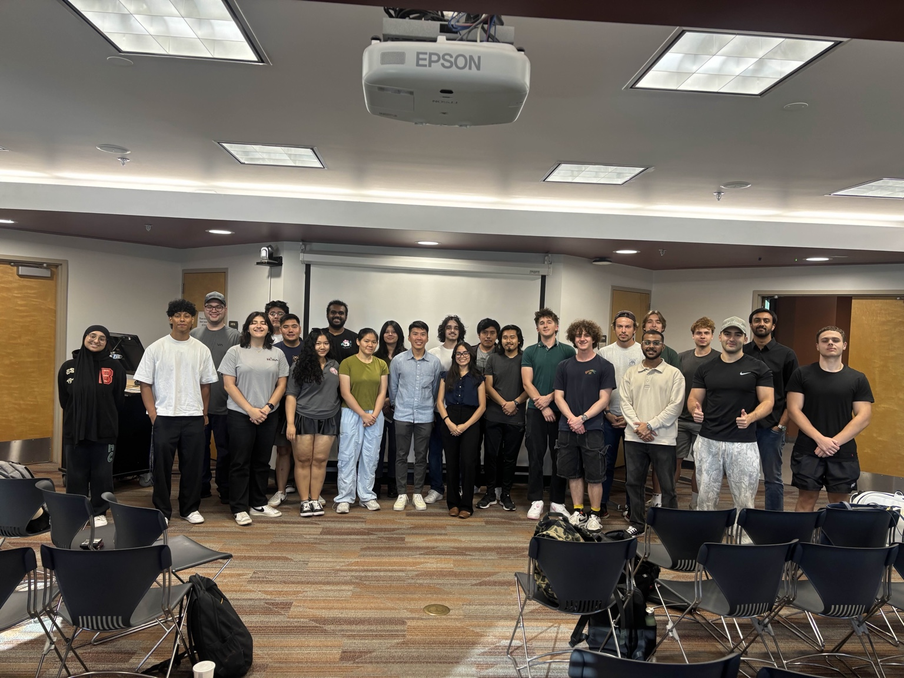

MISA welcomed Steve Tcherchian, CEO of XYPRO, for a guest speaker session focused on leadership, cybersecurity, and innovation. Students gained valuable industry insights, participated in engaging discussions, and learned from Steve's professional experience.

MISA welcomed Ale Nijamkin from Google for a tech meeting focused on artificial intelligence. Students explored insights into AI, participated in discussion, and learned more about its growing role in today's technology landscape.

MISA brings together CSUN students interested in information systems, technology, and professional development. Through technical meetings, guest speakers, and collaborative events, members have opportunities to connect with peers, explore the industry, and grow together as a community.